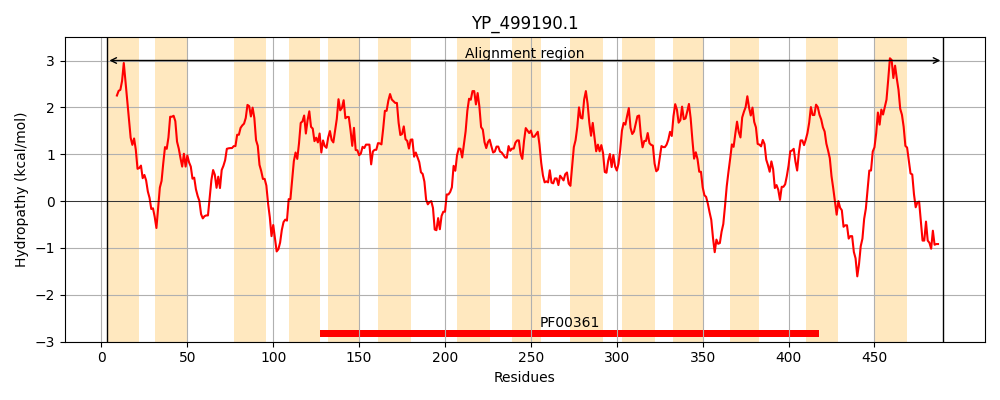
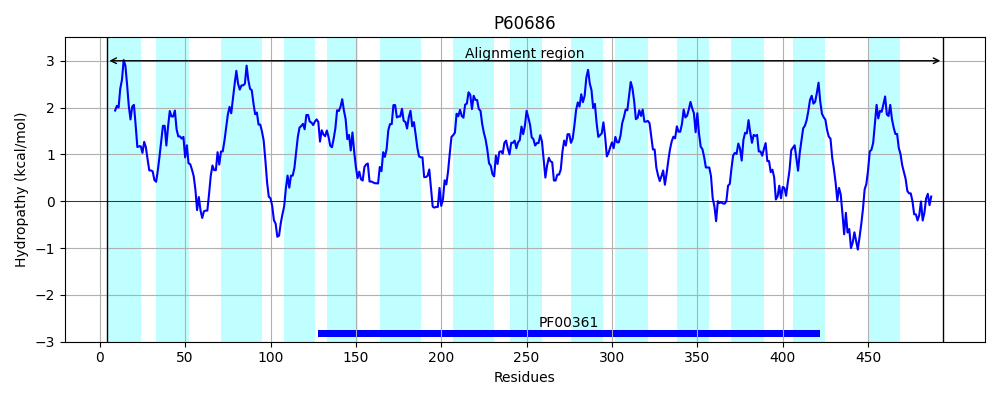
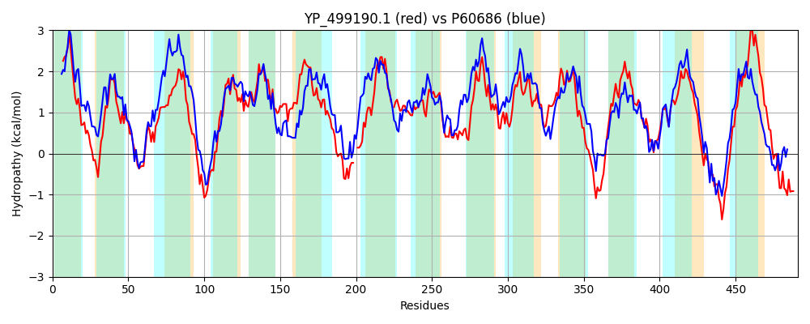

Hit Accession: P60686
Hit TCID: 2.A.63.1.3
Hit Description: gnl|BL_ORD_ID|11125 gnl|TC-DB|P60686|2.A.63.1.3 Na(+)/H(+) antiporter subunit D - Staphylococcus aureus.
Mach Len: 491
e:0.000000
Query TMS Count : 14
Hit TMS Count: 14
TMS-Overlap Score: 12.400000
Predicted Substrates:CHEBI:9175;sodium(1+), CHEBI:5584;hydron
BLAST Alignment:
Score: 869 , Bit scores: 339 bits, E-value: 1.3e-111, Alignment length: 491, Percentage identity: 34
Query: 3 SNLLILPMLLPFLCALILVFLKNNDRISKYLYLGTMTITTIISLMLLIYVQRHRPITLDFGGWSAPFGIQFLGDSLSLIMVTTASFVITLIMAYGFGRGEHKANRYHLPSFILFLSVGVIGSFLTSDLFNLYVMFEIMLLASFVLITLGQSVEQLRAAIIYVVLNIIGSWLFLLGIGLLYKTVGTLNFSHIAMRLNDMG--DNRTVTMISLIFLVAFSAKAALV-LFMWLPKAYAVLNTELAALFAALMTKVGAYALIRFFTLLFDQHNDLIHPLLATMAAITMVIGAIGVIAYKDIKKIAAYQVIISIGFIILGLGTNTFAGINGAIFYLVNDIVVKTLLFFIIGSLVYITGYRQYQYLNGLAKKEPLFGVAFIIMIFAIGGVPPFSGFPGKVLIFQGALQNGNYIGLALMIITSLIAMYSLFRILFYMYFGDKDGEEVNFKKIPLYRKRILSILVVVVIAIGIAAPVVLNVTSDATELNTSDQLYQKLV 490
SN+L+L +++P + A++LVF+ I +Y+ LG +T + +++ L V +H PI ++ G W AP+ I F+ D S +++ T+ + +++ Y + + RY+ +LF+ +G+IG+F T D+FNL+V FE+ L++S+ L+ +G + QL+ I YV++N++ S F++G+ +LY VGTLN + I+ +L ++ D+ V ++ ++F+ F+ KA + +F+WLP AY + A F AL+TKVG YA+ R +L F + H ++ +A +T++ G +G +AY +IKKI Y V+I++G I++G+ T +G+ GAI+Y ++D++VK LF +IG ++ ITG + GL K+ P+ G +F I ++ G+PP SGF GK I Q + G Y+ +++++SL+ +YS+ RI +FG G ++N K Y I + VV+ + G++A + + E + Y K V
Sbjct: 4 SNMLVLTLVIPVITAILLVFIGKRPIIKRYVALGGTLLTLVAAIINLANVVKHGPIRVELGSWKAPYSIVFVLDIFSALLIITSIIITAIVILYSYQTIGIERERYYYYFSVLFMLIGIIGAFTTGDIFNLFVFFEVFLMSSYFLLVIGSTKIQLQETIKYVLVNVVSSSFFVMGVAILYSVVGTLNLADISNKLANLSAHDSGLVNIVFILFIFVFATKAGVFPMFVWLPSAYYAPPIPIIAFFGALLTKVGVYAIARTLSLFFSDNVSFSHYVILFLALLTIIFGCVGAVAYANIKKIILYNVMIAVGVILVGVAMMTESGMIGAIYYTLHDMLVKLALFLLIGIMIKITGTADLRQFGGLIKRYPVLGWSFFIAALSLAGIPPLSGFYGKFFIVQSTFERGFYLSGVIVLLSSLVVLYSVIRIFLQGFFGQPKGYDLNNKVDVKYLTTIAIVAVVITVLYGLSADYLYPMVKAGAETFYNPSTYVKAV 494 | Protein Hydropathy Plots: |
|---|
|  |  |
Pairwise Alignment-Hydropathy Plot:
|
|---|
|  |